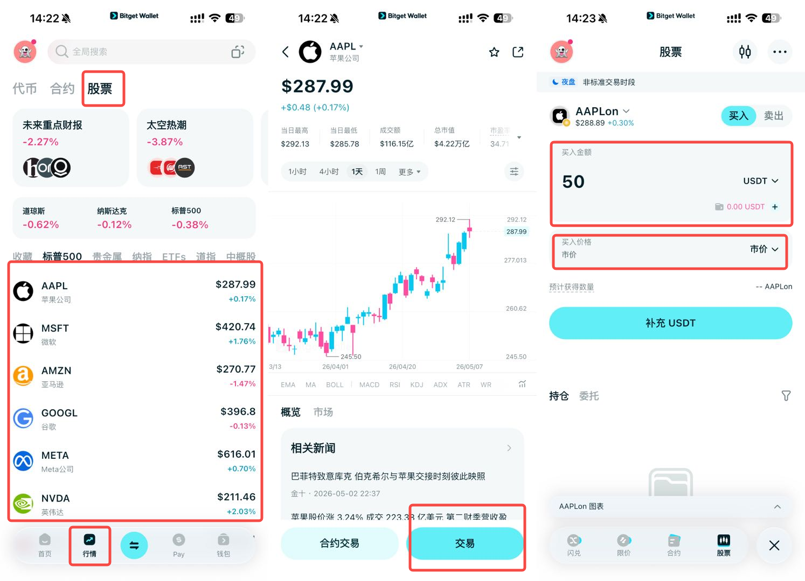

如何在 Bitget 钱包交易美股代币
在 Bitget Wallet 中进入股票专区，挑选并交易美股代币。
如何在 Bitget 钱包交易美股代币？
1. 进入股票交易专区
在 Bitget 钱包首页，点击底部菜单栏的“行情”
在顶部分类中找到并点击 “股票” 。如果你没看到，确保 App 已更新至最新版本。
2. 挑选美股标的
你会看到类似特斯拉 (TSLA)、英伟达 (NVDA)、苹果 (AAPL) 等代币。
点击你感兴趣的股票，进入详情页查看行情走势。
3. 执行买入
点击底部的 “交易” 。
输入金额：你可以选择输入想购买的代币数量（例如 0.1 股），也可以切换为 USDT 金额（例如我想买 50 USDT 的英伟达）。
设置参数：新手建议保留默认的“限价单”或“市价单”。
确认订单：点击确认。此时系统会调用你的钱包进行签名授权（可能需要极少量的 Gas 费，如果你用的是 BNB Chain，钱包里需留一点点 BNB 作为手续费）。
4. 管理持仓
买入成功后，你可以在钱包首页底部“钱包”中看到这些股票代币。
你可以随时像卖出加密货币一样将其卖回成 USDT。
